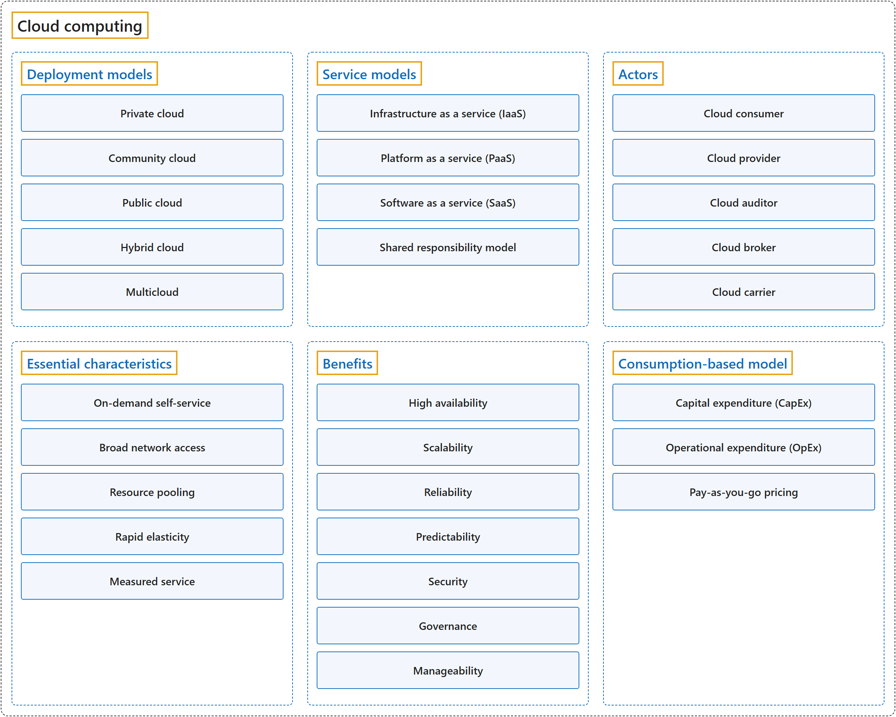

1. Cloud Computing
Classification

Glossary
| Term | Definition | 中文翻译 | Source |
|---|---|---|---|
| Cloud computing 云计算 |
"Cloud computing is the delivery of computing services over the internet. Computing services include common IT infrastructure such as virtual machines, storage, databases, and networking." | 云计算是指计算服务的交付，通过互联网进行。计算服务包括常见的 IT 基础结构，例如虚拟机、存储、数据库和网络。 | Microsoft, n.d.-a, "What is cloud computing" unit, para. 1 |
| Deployment models 部署模型 |
"Deployment models describe how cloud environments are structured, who manages them, and how they are accessed." | 部署模型描述云环境如何构建、由谁管理，以及如何访问。 | Microsoft, n.d.-b, "Types of cloud deployment models" section, para. 1 |
| Service models 服务模型 |
"Service models describe how cloud resources are delivered to users. They determine how much control an organization has over infrastructure, platforms, or applications." | 服务模型描述云资源如何交付给用户。它们决定组织对基础结构、平台或应用程序拥有多少控制权。 | Microsoft, n.d.-b, "Types of cloud service models" section, para. 1 |
| Actors 参与者 |
"... the NIST cloud computing reference architecture defines five major actors: cloud consumer, cloud provider, cloud carrier, cloud auditor and cloud broker. Each actor is an entity (a person or an organization) that participates in a transaction or process and/or performs tasks in cloud computing." | ……NIST 云计算参考架构定义了五个主要参与者：云使用者、云提供者、云运营商、云审计者和云代理。每个参与者都是一个实体（个人或组织），它参与事务或流程，和/或在云计算中执行任务。 | Liu et al., 2011, Section 2.1, para. 2 |
| Essential characteristics 基本特征 |
"This cloud model is composed of five essential characteristics, three service models, and four deployment models." | 这种云模型由五个基本特征、三种服务模型和四种部署模型组成。 | Mell & Grance, 2011, Section 2, para. 1 |
| Benefits 优势 |
"You learn how cloud computing can help you meet variable demand while providing a good experience for your customer. You also learn about security, governance, sustainability, and overall manageability in the cloud." | 你将了解云计算如何帮助你满足可变需求，同时为客户提供良好的体验。你还将了解云中的安全性、治理、可持续性和整体可管理性。 | Microsoft, n.d.-a, "Introduction" unit of "Describe the benefits of using cloud services", para. 1 |
| Consumption-based model 基于消耗的模型 |
"Cloud computing operates on a consumption-based model. You pay for the IT resources you use, and nothing more." | 云计算采用基于消耗的模型。你只为所使用的 IT 资源付费，仅此而已。 | Microsoft, n.d.-a, "Describe the consumption-based model" unit, para. 1 |
Coverage
| Certification | Skill area |
|---|---|
| AZ-900 Microsoft Azure Fundamentals | Describe cloud concepts (25–30%) |
References
- Liu, F., Tong, J., Mao, J., Bohn, R., Messina, J., Badger, L., & Leaf, D. (2011). NIST cloud computing reference architecture (NIST Special Publication 500-292). National Institute of Standards and Technology. https://doi.org/10.6028/NIST.SP.500-292
- Mell, P., & Grance, T. (2011). The NIST definition of cloud computing (NIST Special Publication 800-145). National Institute of Standards and Technology. https://doi.org/10.6028/NIST.SP.800-145
- Microsoft. (n.d.-a). Microsoft Azure Fundamentals: Describe cloud concepts [Learning path]. Microsoft Learn. Retrieved October 21, 2026, from https://learn.microsoft.com/en-us/training/paths/microsoft-azure-fundamentals-describe-cloud-concepts/
- Microsoft. (n.d.-b). Types of cloud computing. Microsoft Azure. Retrieved October 22, 2026, from https://azure.microsoft.com/en-us/resources/cloud-computing-dictionary/types-of-cloud-computing
- Microsoft. (2026). Study guide for Exam AZ-900: Microsoft Azure Fundamentals. Microsoft Learn. https://learn.microsoft.com/en-us/credentials/certifications/resources/study-guides/az-900